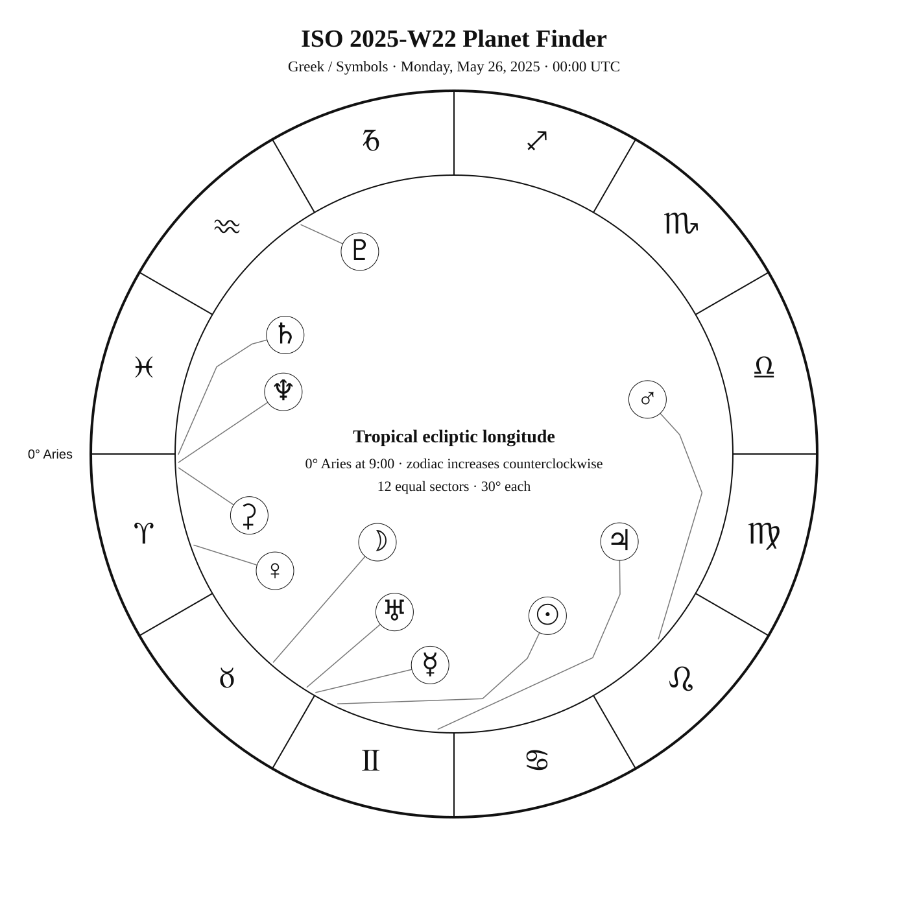
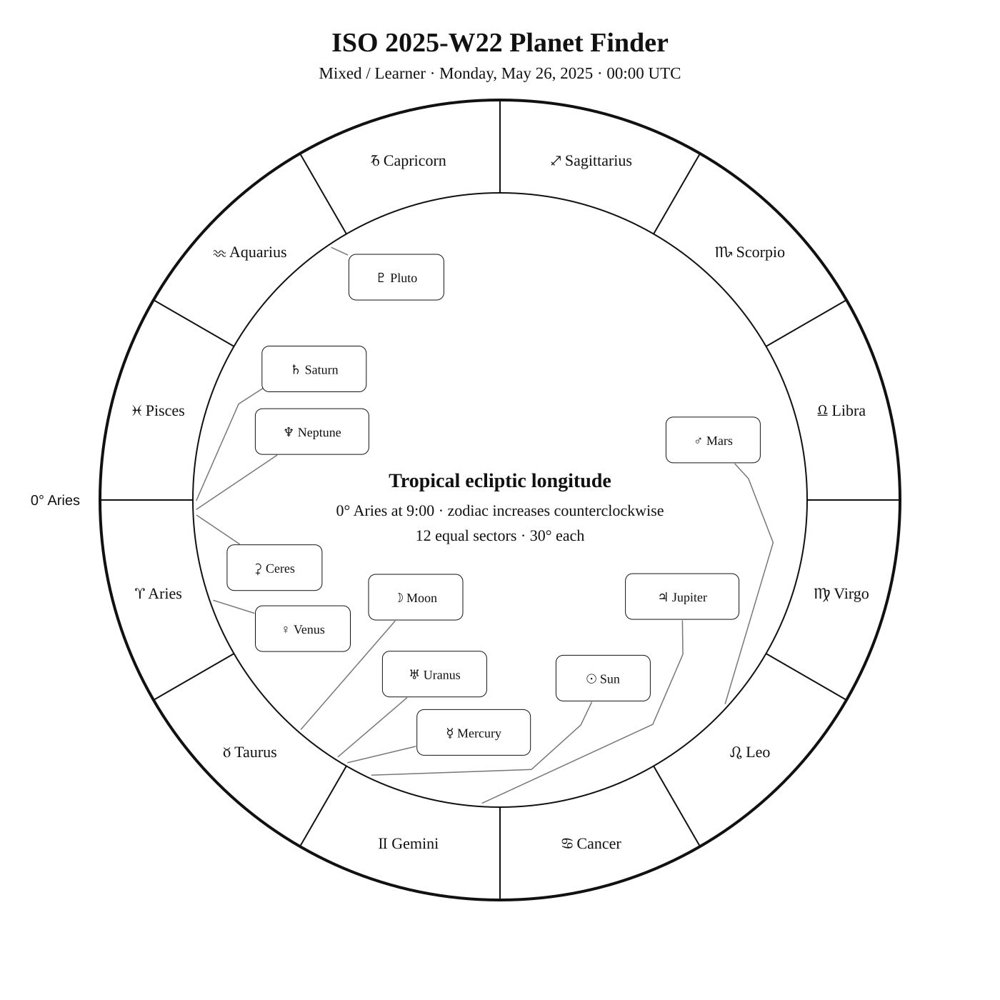

ISO 2025-W22
Week begins: Monday, May 26, 2025
Calendar
| Date | Zodiac day | Events |
|---|---|---|
| Mon, May 26, 2025 | ♊ 7 | C29 / NGC 5005 / Finest NGC 66 / NGC 5005 · MCG 6-29-52 —  10 9.8 — Northern Spring 10 9.8 — Northern Springβ Com —  4 4.2 — Northern Spring — in the Milky Way 4 4.2 — Northern Spring — in the Milky WayM53 — 8 7.6 — Tropical SpringFinest NGC 67 / NGC 5033 · MCG 6-29-62 — 11 10.7 — Northern Spring |
| Tue, May 27, 2025 | ♊ 8 | 🌑 New Moon — 03:02:21 UTC M63 — 9 8.6 — Northern Spring |
| Wed, May 28, 2025 | ♊ 9 | |
| Thu, May 29, 2025 | ♊ 10 | Mizar (ζ UMa) —  2 2.2 — Northern Spring 2 2.2 — Northern SpringSpica (α Vir) — Var 1 1.0 1.0–1.1 — Tropical SpringC77 / NGC 5128 · Centaurus A — 7 7.0 — Southern Spring |
| Fri, May 30, 2025 | ♊ 11 | C80 / NGC 5139 · Omega Centauri — 4 3.6 — Southern SpringM51 — 8 8.4 — Northern Spring |
| Sat, May 31, 2025 | ♊ 12 | |
| Sun, Jun 1, 2025 | ♊ 13 | M83 — 8 7.6 — Southern SpringC45 / NGC 5248 — 10 10.2 — Tropical Spring |
Weekly Solar-System Ephemeris
Snapshot: Week begins May 26, 2025, 00:00 UTC.
(-90° to +90°; defaults +45°, 21:00 LAT)
| Body | ☉︎ | ☽︎ | ☿︎ | ♀︎ | ♂︎ | ♃︎ | ♄︎ |
|---|---|---|---|---|---|---|---|
| Ecliptic | ♊︎ 5°01′ β +0°00′ | ♉︎ 19°03′ β +4°06′ | ♉︎ 29°55′ β −0°09′ | ♈︎ 19°18′ β −1°47′ | ♌︎ 17°54′ β +1°33′ | ♊︎ 26°40′ β −0°11′ | ♈︎ 0°04′ β −2°05′ |
| Observing |  | ☉︎ | ☉︎ | -4.5 | 1.2 | -1.9 | 1.1 |
| Rise | 04:24 | 03:14 | 04:10 | 02:35 | 09:56 | 05:48 | 01:56 |
| Set | 19:36 | 18:25 | 19:07 | 15:28 | 00:26 | 21:19 | 13:47 |
Extended targets:
| Body | ⚳︎ | ♅︎ | ♆︎ | ♇︎ |
|---|---|---|---|---|
| Ecliptic | ♈︎ 2°53′ β −9°29′ | ♉︎ 27°46′ β −0°13′ | ♈︎ 1°45′ β −1°18′ | ♒︎ 3°43′ β −3°37′ |
| Observing | 9.3 | ☉︎ | 7.8 | 14.5 |
| Rise | 02:41 | 04:04 | 01:56 | 23:52 |
| Set | 13:46 | 18:56 | 13:57 | 08:39 |
β = ecliptic latitude (+ north, − south).
Rise and set are Local Apparent Time for the selected latitude.
Naked-eye observing uses the Sun’s altitude at the selected Monday observer time: Daylight (Sun ≥ −0.833°), Civil twilight (−0.833° to −6°), Nautical twilight (−6° to −12°), Astronomical twilight (−12° to −18°), and Night (below −18°).
Solar Glare identifies a body too close to the Sun when the sky-state rule does not already supersede its naked-eye classification.
The Sun’s observing status uses this same five-state sky classification.
Planet Finder


Sky Notes
Kilroy: Sky Notes · generated 2026-10-23 10:04:20 UTC
ISO 2025-W22 runs from May 26 through June 1. Ceres and Neptune are separated by about 1.1° in geocentric ecliptic longitude at the Monday 00:00 UTC snapshot. Saturn and Neptune are separated by about 1.7° in geocentric ecliptic longitude at the Monday 00:00 UTC snapshot.


Naked eye: 🌑 New Moon — 03:02:21 UTC. The dark Moon favors faint targets and extended star fields. Use Mizar, Spica as the week’s fixed-sky framework.

Planets: Moon: In solar glare; magnitude -5.7; direct motion; 2.1% illuminated. Monday 00:00 UTC snapshot. Solar conjunction in ecliptic longitude May 27 03:02 UTC. Conjunction with Mercury in ecliptic longitude May 26 20:04 UTC. Conjunction with Mars in ecliptic longitude Jun 01 10:40 UTC. Conjunction with Jupiter in ecliptic longitude May 28 13:00 UTC. Conjunction with Uranus in ecliptic longitude May 26 13:51 UTC. Mercury: In solar glare; magnitude -1.8; direct motion; 97.9% illuminated. Monday 00:00 UTC snapshot. Solar conjunction in ecliptic longitude May 30 04:12 UTC. Conjunction with Moon in ecliptic longitude May 26 20:04 UTC. Venus: Naked eye; magnitude -4.5; direct motion; 46.1% illuminated. Below the horizon at 21:00 local apparent solar time, 45°N. Monday 00:00 UTC snapshot. Mars: Naked eye; magnitude 1.2; direct motion; 90.6% illuminated. Monday 00:00 UTC snapshot. Conjunction with Moon in ecliptic longitude Jun 01 10:40 UTC. Ceres: Telescope; magnitude 9.3; direct motion; 97.7% illuminated. Below the horizon at 21:00 local apparent solar time, 45°N. Monday 00:00 UTC snapshot. Jupiter: Naked eye; magnitude -1.9; direct motion; 99.9% illuminated. Monday 00:00 UTC snapshot. Conjunction with Moon in ecliptic longitude May 28 13:00 UTC. Saturn: Naked eye; magnitude 1.1; direct motion; 99.8% illuminated. Below the horizon at 21:00 local apparent solar time, 45°N. Monday 00:00 UTC snapshot. Uranus: In solar glare; magnitude 5.8; direct motion; 100.0% illuminated. Monday 00:00 UTC snapshot. Conjunction with Moon in ecliptic longitude May 26 13:51 UTC. Neptune: Telescope; magnitude 7.8; direct motion; 100.0% illuminated. Below the horizon at 21:00 local apparent solar time, 45°N. Monday 00:00 UTC snapshot. Pluto: Substantial telescope; magnitude 14.5; retrograde motion; 100.0% illuminated. Below the horizon at 21:00 local apparent solar time, 45°N. Monday 00:00 UTC snapshot.


Binoculars: Trace Coma Berenices’s charted figure in the finder, then identify β Com at its charted position.
Small telescope: MCG 6-29-52: consult its dedicated finder and observing story for equipment guidance; M53: consult its dedicated finder and observing story for equipment guidance; MCG 6-29-62: consult its dedicated finder and observing story for equipment guidance; Sunflower Galaxy: consult its dedicated finder and observing story for equipment guidance; Centaurus A: consult its dedicated finder and observing story for equipment guidance; Omega Centauri: consult its dedicated finder and observing story for equipment guidance; Whirlpool Galaxy: consult its dedicated finder and observing story for equipment guidance; Southern Pinwheel: consult its dedicated finder and observing story for equipment guidance; NGC 5248: consult its dedicated finder and observing story for equipment guidance
Substantial telescope: No fixed-sky Calendar object is classified as requiring a substantial telescope this week.
Other objects listed this week: None
Mercury
Mercury: in solar glare at the Monday 00:00 UTC snapshot. Rises 04:10; sets 19:07 (45°N, local apparent solar time). Visual magnitude -1.8. The disk is 97.9% illuminated (gibbous). It is 5.1° from the Sun, on its west side. Motion is direct at 2.152° per day in ecliptic longitude at the snapshot. Position reference: Aldebaran, 11.5° away. Uranus is 2.1° away at the snapshot. Solar conjunction in ecliptic longitude May 30 04:12 UTC. Conjunction with Moon in ecliptic longitude May 26 20:04 UTC. Mercury: 11.5° from Aldebaran in the Pathfinder.
Venus
Venus: naked eye at the Monday 00:00 UTC snapshot. At 45°N and 21:00 local apparent solar time, it is 39.2° below the horizon. Rises 02:35; sets 15:28 (45°N, local apparent solar time). Visual magnitude -4.5. The disk is 46.1% illuminated (crescent). It is 45.7° from the Sun, on its west side. Motion is direct at 0.915° per day in ecliptic longitude at the snapshot. Position reference: Alrescha, 12.7° away. Venus: 12.7° from Alrescha in the Pathfinder.
Moon
Moon: in solar glare at the Monday 00:00 UTC snapshot. Rises 03:14; sets 18:25 (45°N, local apparent solar time). Visual magnitude -5.7. The disk is 2.1% illuminated (waning crescent). It is 16.5° from the Sun, on its west side. Motion is direct at 15.133° per day in ecliptic longitude at the snapshot. Position reference: Hamal, 12.4° away. Solar conjunction in ecliptic longitude May 27 03:02 UTC. Conjunction with Mercury in ecliptic longitude May 26 20:04 UTC. Conjunction with Mars in ecliptic longitude Jun 01 10:40 UTC. Conjunction with Jupiter in ecliptic longitude May 28 13:00 UTC. Conjunction with Uranus in ecliptic longitude May 26 13:51 UTC. Moon: 12.4° from Hamal in the Pathfinder.
Mars
Mars: naked eye at the Monday 00:00 UTC snapshot. At 45°N and 21:00 local apparent solar time, it is 35.0° above the horizon. Rises 09:56; sets 00:26 (45°N, local apparent solar time). Visual magnitude 1.2. The disk is 90.6% illuminated (gibbous). It is 72.9° from the Sun, on its east side. Motion is direct at 0.521° per day in ecliptic longitude at the snapshot. Position reference: Acubens, 7.7° away. Conjunction with Moon in ecliptic longitude Jun 01 10:40 UTC. Mars: 7.7° from Acubens in the Pathfinder.
Jupiter
Jupiter: naked eye at the Monday 00:00 UTC snapshot. At 45°N and 21:00 local apparent solar time, it is 2.2° above the horizon. Rises 05:48; sets 21:19 (45°N, local apparent solar time). Visual magnitude -1.9. The disk is 99.9% illuminated (nearly full). It is 21.7° from the Sun, on its east side. Motion is direct at 0.221° per day in ecliptic longitude at the snapshot. Position reference: Elnath, 6.7° away. Conjunction with Moon in ecliptic longitude May 28 13:00 UTC. Jupiter: 6.7° from Elnath in the Pathfinder.
Saturn
Saturn: naked eye at the Monday 00:00 UTC snapshot. At 45°N and 21:00 local apparent solar time, it is 44.5° below the horizon. Rises 01:56; sets 13:47 (45°N, local apparent solar time). Visual magnitude 1.1. The disk is 99.8% illuminated (nearly full). It is 65.0° from the Sun, on its west side. Motion is direct at 0.074° per day in ecliptic longitude at the snapshot. Position reference: Fumalsamakah, 15.7° away. Neptune is 1.9° away at the snapshot. Saturn: 15.7° from Fumalsamakah in the Pathfinder.
Uranus
Uranus: in solar glare at the Monday 00:00 UTC snapshot. Rises 04:04; sets 18:56 (45°N, local apparent solar time). Visual magnitude 5.8. The disk is 100.0% illuminated (nearly full). It is 7.3° from the Sun, on its west side. Motion is direct at 0.058° per day in ecliptic longitude at the snapshot. Position reference: Aldebaran, 13.4° away. Mercury is 2.1° away at the snapshot. Conjunction with Moon in ecliptic longitude May 26 13:51 UTC. Uranus: 13.4° from Aldebaran in the Pathfinder.
Neptune
Neptune: telescope at the Monday 00:00 UTC snapshot. At 45°N and 21:00 local apparent solar time, it is 43.5° below the horizon. Rises 01:56; sets 13:57 (45°N, local apparent solar time). Visual magnitude 7.8. The disk is 100.0% illuminated (nearly full). It is 63.3° from the Sun, on its west side. Motion is direct at 0.021° per day in ecliptic longitude at the snapshot. Position reference: Fumalsamakah, 16.4° away. Saturn is 1.9° away at the snapshot. Neptune: 16.4° from Fumalsamakah in the Pathfinder.
Ceres
Ceres: telescope at the Monday 00:00 UTC snapshot. At 45°N and 21:00 local apparent solar time, it is 51.4° below the horizon. Rises 02:41; sets 13:46 (45°N, local apparent solar time). Visual magnitude 9.3. The disk is 97.7% illuminated (gibbous). It is 62.5° from the Sun, on its west side. Motion is direct at 0.303° per day in ecliptic longitude at the snapshot. Position reference: Diphda, 11.3° away. Ceres: 11.3° from Diphda in the Pathfinder.
Pluto
Pluto: substantial telescope at the Monday 00:00 UTC snapshot. At 45°N and 21:00 local apparent solar time, it is 29.1° below the horizon. Rises 23:52; sets 08:39 (45°N, local apparent solar time). Visual magnitude 14.5. The disk is 100.0% illuminated (nearly full). It is 121.2° from the Sun, on its west side. Motion is retrograde at 0.009° per day in ecliptic longitude at the snapshot. Position reference: Dabih, 8.2° away. Pluto: 8.2° from Dabih in the Pathfinder.
Highlights
Mercury
In solar glare; magnitude -1.8; direct motion; 97.9% illuminated. Monday 00:00 UTC snapshot. Solar conjunction in ecliptic longitude May 30 04:12 UTC. Conjunction with Moon in ecliptic longitude May 26 20:04 UTC. Mercury: 11.5° from Aldebaran in the Pathfinder.
Venus
Naked eye; magnitude -4.5; direct motion; 46.1% illuminated. Below the horizon at 21:00 local apparent solar time, 45°N. Monday 00:00 UTC snapshot. Venus: 12.7° from Alrescha in the Pathfinder.
Moon
In solar glare; magnitude -5.7; direct motion; 2.1% illuminated. Monday 00:00 UTC snapshot. Solar conjunction in ecliptic longitude May 27 03:02 UTC. Conjunction with Mercury in ecliptic longitude May 26 20:04 UTC. Conjunction with Mars in ecliptic longitude Jun 01 10:40 UTC. Conjunction with Jupiter in ecliptic longitude May 28 13:00 UTC. Conjunction with Uranus in ecliptic longitude May 26 13:51 UTC. Moon: 12.4° from Hamal in the Pathfinder.
Mars
Naked eye; magnitude 1.2; direct motion; 90.6% illuminated. Monday 00:00 UTC snapshot. Conjunction with Moon in ecliptic longitude Jun 01 10:40 UTC. Mars: 7.7° from Acubens in the Pathfinder.
Jupiter
Naked eye; magnitude -1.9; direct motion; 99.9% illuminated. Monday 00:00 UTC snapshot. Conjunction with Moon in ecliptic longitude May 28 13:00 UTC. Jupiter: 6.7° from Elnath in the Pathfinder.
Saturn
Naked eye; magnitude 1.1; direct motion; 99.8% illuminated. Below the horizon at 21:00 local apparent solar time, 45°N. Monday 00:00 UTC snapshot. Saturn: 15.7° from Fumalsamakah in the Pathfinder.
Uranus
In solar glare; magnitude 5.8; direct motion; 100.0% illuminated. Monday 00:00 UTC snapshot. Conjunction with Moon in ecliptic longitude May 26 13:51 UTC. Uranus: 13.4° from Aldebaran in the Pathfinder.
Neptune
Telescope; magnitude 7.8; direct motion; 100.0% illuminated. Below the horizon at 21:00 local apparent solar time, 45°N. Monday 00:00 UTC snapshot. Neptune: 16.4° from Fumalsamakah in the Pathfinder.
Ceres
Telescope; magnitude 9.3; direct motion; 97.7% illuminated. Below the horizon at 21:00 local apparent solar time, 45°N. Monday 00:00 UTC snapshot. Ceres: 11.3° from Diphda in the Pathfinder.
Pluto
Substantial telescope; magnitude 14.5; retrograde motion; 100.0% illuminated. Below the horizon at 21:00 local apparent solar time, 45°N. Monday 00:00 UTC snapshot. Pluto: 8.2° from Dabih in the Pathfinder.